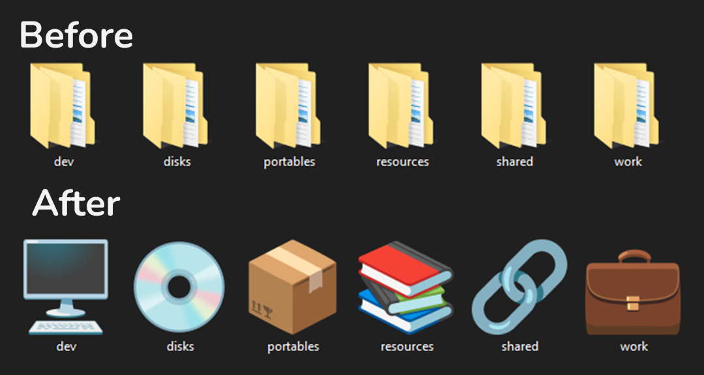

Portofolio
Iklan Singkat
Iklan singkat yang memamerkan lampu speaker.
Penghias Folder
Aplikasi Folder Iconifier untuk menghias folder-folder di Windows
Iklan singkat yang memamerkan lampu speaker.
Aplikasi Folder Iconifier untuk menghias folder-folder di Windows